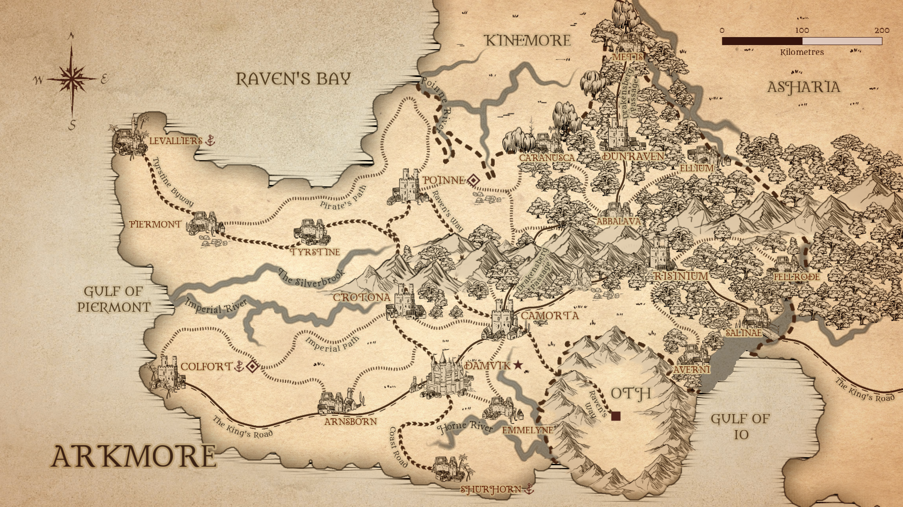
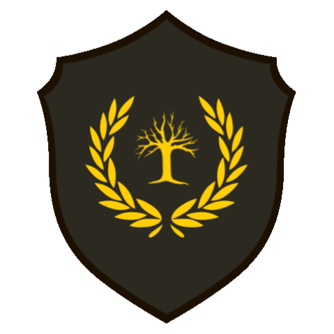
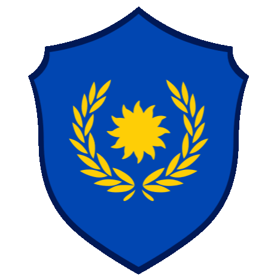

Unity Conquers All
Arkmore is a temperate, coastal country in the south-west of Astren. It is the seat of the Astran Empire and renowned for Levalliers' pirate affiliation. Arkmore is home to the most common races of Arkmore, and while there are no unique factors that distinguish Arkmorians from any other nationality, the home of the Empire gives most of its citizens a sense of power.
GEOGRAPHY

NOBILITY

BLACKWOOD
POINNE
House Blackwood hold dominon over the landlocked Northeastern regions of Arkmore. Headed by Lord Corbin Blackwood.

NAEFAREN
DAMVIK
House Naefaren are Arkmore's representatives to the Empire, and hold Arkmore's set on the Imperial Council. Within the nation, they preside over the central region of Arkmore. Headed by Lord Vedran Naefaren.
COLFORT
CASTILLON
House Colfort preside over the West of Arkmore and its oversee its considerable coast. Headed by Lady Corinne Castillon.